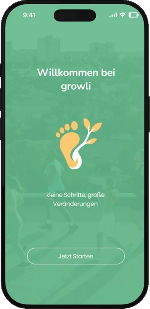
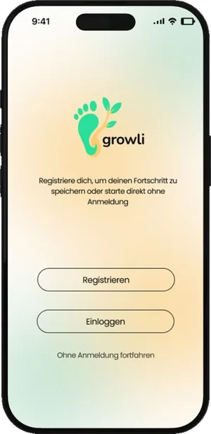
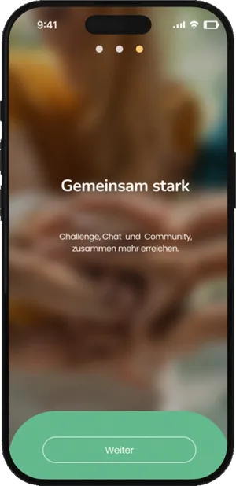
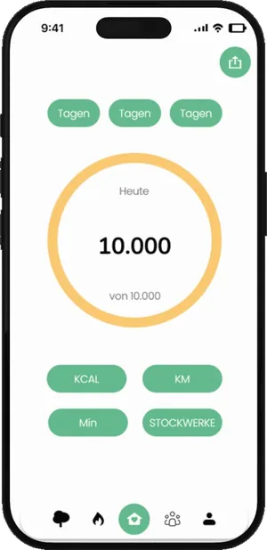
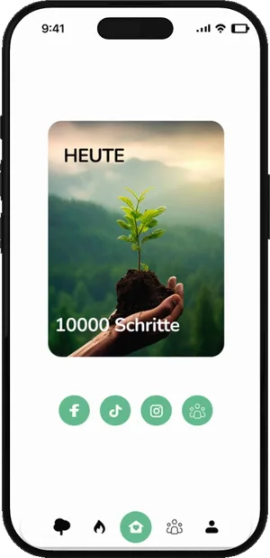
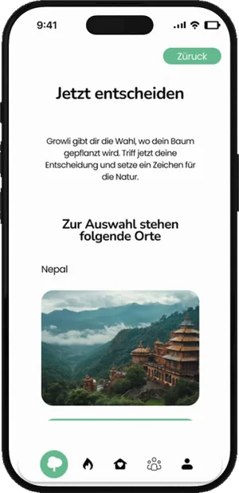
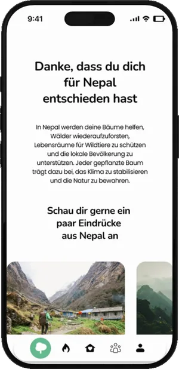
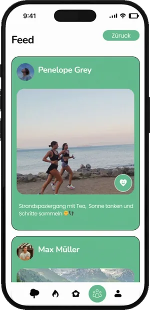
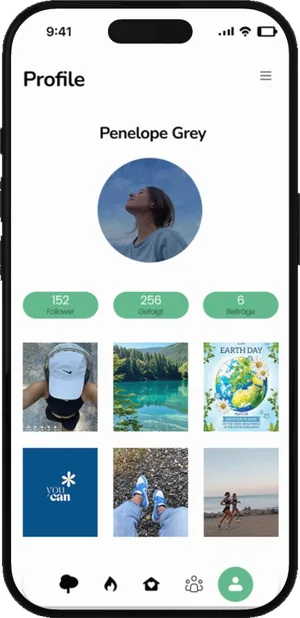
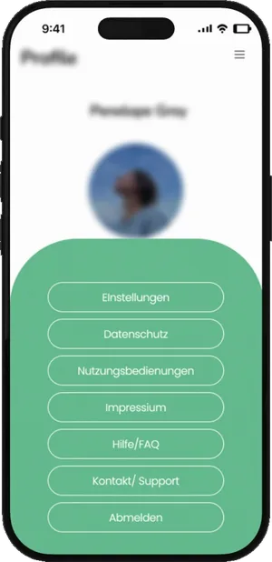

Growli — Mobile App Design
Growli — mobile app design
Konzeption und UI/UX-Design einer gamifizierten Schrittzähler-App mit Umweltbezug. Im Modul Mobile App Design verbindet das Konzept Gesundheit mit Nachhaltigkeit: Gelaufene Schritte lassen einen virtuellen Park wachsen und führen schließlich zur Pflanzung eines echten Baumes. Für Motivation sorgt ein Social-Media-Bereich mit Feeds, Profilen, Bild-Postings und Chats.
Concept and UI/UX design for a gamified step-counter app with an environmental theme. Developed in the Mobile App Design module, the concept links health and sustainability: steps grow a virtual park and ultimately lead to planting a real tree. A social area with feeds, profiles, image posts and chats keeps users motivated.









